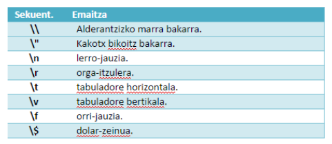

DWS 2. unitatea - PHP Elementuak¶
Testu kateak¶
PHPn testu kateak bi modutara adieraz ditzakegu:
- Kakotx sinpleak (
' ') - Kakotx bikoitzak (
" ")
Interpolazioa vs Kateen kateatzea¶
Interpolazioa (Kakotx bikoitzak)¶
Kateek kakotx sinpleak zein bikoitzak erabil ditzakete PHPn. Alde nabarmena dago bata eta bestearen artean, ordea: aldagaia kakotx bikoitzen artean jartzen dugunean, interpolazioa gertatzen da - hau da, PHPk automatikoki aldagaia bere balioarekin ordezkatzen du prozesatu baino lehen.
<?php
$ikasgaia = "DWES";
echo "Ikasgaia: $ikasgaia"; // Irteera: Ikasgaia: DWES
?>
$ikasgaia aldagaia kakotx bikoitzen artean ezagutzen da, eta irteera sortu baino lehen, "DWES"ekin ordezkatua da automatikoki.
Kateen kateatzea (Concatenación)¶
Kateatzeak aldagaiak eta testua eskuz elkartzea esan nahi du . eragilea erabiliz:
<?php
$ikasgaia = "DWES";
echo "Ikasgaia: " . $ikasgaia; // Irteera: Ikasgaia: DWES
?>
Kakotx moten konparaketa¶
Aldagaiak kateetan¶
<?php
$ikasgaia = "DWES";
// Kakotx bikoitzak: interpolazioa (aldagaien ordezkapena automatikoa)
echo "Ikasgaia: $ikasgaia"; // Irteera: Ikasgaia: DWES
// Kakotx sinpleak: testu literala bezala tratatzen du
echo 'Ikasgaia: $ikasgaia'; // Irteera: Ikasgaia: $ikasgaia
?>
Garrantzitsua: Kakotx sinpleak erabiltzean, interpolaziorik ez da gertatzen, aldagaia literalki agertzen da.
Kateen kateatzea (concatenación)¶
<?php
$izena = "Pertsona";
$agur = "Kaixo " . $izena . "!";
echo $agur; // Irteera: Kaixo Pertsona!
?>
Ihes egindako karaktereak¶
String kakotx bikoitzen artean badago ("), PHPk ihes-sekuentzia hauek interpretatuko ditu karaktere berezietarako:
Kakotx sinpleak erabiltzean, bi ordezkapen baino ez dira egiten katearen barruan: \' topatzen denean, kakotx sinplea erakusten da irteeran; \ topatzen denean, berriz, alderantzizko marra erakusten da irteeran.
Sekuentzia horiek ihes-sekuentzia gisa ezagutuak dira. Kakotx bikoitzak erabiltzen dituzten kateetan, \ sekuentziaz aparte, beste batzuk erabili daitezke; \' sekuentzia, ordea, ez.
Kakotx bikoitzekin erabiltzeko ihes-sekuentziak agertzen dira honako taula honetan:

String-erako aldatzea eta irteera funtzioak¶
echo vs print vs printf¶
echo funtzioa¶
- Arinena eta ohikoena
- Hainbat parametro onar ditzake
- Ez du balioa bueltatzen
<?php
echo "Lehenengo katea", " bigarren katea", " hirugarren katea";
// Komaz bereizitako zenbait kate inprima daitezke
?>
print funtzioa¶
printetaecho-ren arteko alderik handiena:print-ek parametro bakarra jaso dezake eta 1 bueltatzen du- Pixka bat astunagoa da
int print (string $arg);
<?php
// print-arekin 3 kode-lerro behar dira, funtzio baten antzera funtzionatzen du
print "Lehenengo katea";
print " bigarren katea";
print " hirugarren katea";
?>
printf funtzioa¶
printf formateatutako irteera sortzeko erabiltzen da. Hainbat parametro jaso ditzake:
- Lehenengoa: testu-katea da eta ezarri beharreko formatua adierazten du
- Gainerakoak: formatuan agertutako espezifikadoreen arabera ordezkatuko diren balioak
<?php
$zikloa = "DAW";
$ikasgaia = "DWES";
printf("%s %s zikloko %d. mailako ikasgaia", $ikasgaia, $zikloa, 2);
// Irteera: DWES DAW zikloko 2. mailako ikasgaia
?>
printf espezifikadoreak¶
Espezifikadoreek % karakterea daukate aurretik. Ohikoenak:
| Espezifikadorea | Deskribapena | Adibidea |
|---|---|---|
%s |
String (katea) | printf("%s", "testua") |
%d |
Integer (zenbaki osoa) | printf("%d", 25) |
%f |
Float (dezimala) | printf("%.2f", 3.14159) |
%c |
Character (karakterea) | printf("%c", 65) // A |
%x |
Hexadezimala | printf("%x", 255) // ff |
<?php
$izena = "Jon";
$adina = 25;
$nota = 8.75;
printf("Ikaslearen izena: %s, %d urte ditu eta %.1f-ko nota media du", $izena, $adina, $nota);
// Irteera: Ikaslearen izena: Jon, 25 urte ditu eta 8.8-ko nota media du
?>
Espezifikadore gehiago eta informazio gehiago lortzeko: https://www.w3schools.com/php/func_string_printf.asp
### printf
`printf` irteera bat sortzeko beste aukera bat da.
Hainbat parametro jaso ditzake:
- lehenengoa testu-katea da eta ezarri beharreko formatua adierazten du;
- funtzioak beste hainbat parametro jaso ditzake, eta, horietako bakoitzagatik, bihurtze-espezifikadore bat eduki beharko du kateak -parametroak agertutako ordena berean-.
Adibidez:
```php
<?php
$zikloa="DAW";
$ikasgaia="eDWS; print "<p>";
printf("%s %s zikloko %d mailako ikasgaia", $ikasgaia, $zikloa, 2);
print "</p>";
?>
Zelan uste duzue agertuko dela pantailan?
Espezifikadoreek % karakterea daukate aurretik, mota bakarrik da derrigorrezkoa, gainontzekoak hautazkoak dira.
Hurrengo estekan dituzu mota-espezifikadoreak:
Espezifikadore gehiago eta informazio gehiago
Gomendio orokorrak¶
Errendimenduari begira:¶
- echo erabiltzea gomendatzen da errendimendua garrantzitsua denean
- Interpolazioa (kakotx bikoitzak) kateatzea baino arinagoa da kasu sinpleetan
- Kakotx sinpleak pixka bat arinagoak dira ez badago aldagairik
Irakurgarritasunari begira:¶
// ✅ Gomendatua - interpolazioa sinplea denean
echo "Kaixo, $izena!";
// ✅ Gomendatua - kateatzea konplexua denean
echo 'Emaitza: ' . ($a + $b) . ' puntu';
// ❌ Saihestu - nahastearen arrazoia
echo "Kaixo, " . $izena . "!";
Testu kateekin erlazionaturiko funtzioak¶
https://www.php.net/manual/es/ref.strings.php
strlen () funtzioa¶
Katearen luzera itzultzen du.
<?php
echo "Katearen luzera neurtu: ";
echo strlen("Katearen luzera neurtu");
?>
- Katearen luzera begiztetan (bucles) eta funtzioetan erabili ohi da; izan ere, horietan, garrantzitsua baita katea noiz bukatzen den jakitea.
- Stringak array gisa tratatu ditzakegu; hala, katearen azken karakterea lortu nahiko bagenu, honako agindu honekin egin genezake:
$katea[strlen($katea)-1]
strpos () funtzioa¶
Katearen barruan karaktere zehatza bilatzeko erabiltzen da; topatzen baldin badu,
topatutako lehenengo posizioa itzuliko du; behin ere topatzen ez badu, aldiz, false
itzuliko du.
Zer erakutsiko luke honako kode honek?
<?php
$cadena="Esto es una cadena un poco más larga";
$car='c';
$palabra="poco";
$pos=strpos($cadena,$car);
echo "La posición de la 1ª '$car': ",$pos,"<br />";
$pos=strrpos($cadena,$car);
echo "La posición de la última '$car': ", $pos,"<br />";
$pos=strpos($cadena,$palabra);
echo "La posición de la palabra '$palabra': ", $pos,"<br />";
?>
KONTUZ!
Kontuan izan behar da, halaber, kate-en hasierako posizioak 0-n hasten direla, eta ez 1-en.
strrpos() funtzioak azkeneko aldia agertzen dena bilatzen du.
substr() funtzioa¶
Katearen zati bat itzultzen du.
string substr ( string $string , int $start [, int $length ] )
<?php
echo substr('abcdef', 1); // bcdef
echo substr('abcdef', 1, 3); // bcd
echo substr('abcdef', 0, 4); // abcd
echo substr('abcdef', 0, 8); // abcdef
echo substr('abcdef', -1, 1); // f Zergatik ematen du emaitza hau?
?>
substr() funtzioa¶
<?php
// Start negatiboa erabiliz
$rest = substr("abcdef", -1); // devuelve "f"
$rest = substr("abcdef", -2); // devuelve "ef"
$rest = substr("abcdef", -3, 1); // devuelve "d"
?>
strstr() funtzioa¶
Katearen barruan azpikatea topatzen du eta azpikatetik -azpikatea bera barneaurrerako katea itzultzen du osorik.
<?php
$rest = strstr("abcdef", "c"); // devuelve "cdef"
?>
strtr() funtzioa¶
Karaktereak bihurtzen ditu (edo substring-ak ordezkatu).
string str_replace ( mixed $search , mixed $replace , mixed $subject [, int &$count ] )
Bilatutako string-aren agerraldi guztiak ordezkatze-string-arekin ordezkatzen ditu.
<?php
$rest = str_replace("c", "C", "abcdef"); // devuelve "Abcdef"
?>
substr_count¶
Zenbat aldiz agertzen da substring bat string baten barruan. Letra larriz eta xehez sentikorra da
substr_count() funtzioa¶
Substring-aren agerraldi-kopurua zenbatzen du.
chr() funtzioa¶
Parametro gisa pasatutako ASCII-kode zenbakiari dagokion karakterea itzultzen du.
echo chr(65);// ‘A’ katea itzuliko luke
ord() funtzioa¶
Aurrekoaren kontrako funtizoa da. Parametro gisa pasatutako karaktereari dagokion ASCII-kode zenbakia itzultzen du.
echo ord(‘A’);// 65 zenbakia itzuliko luke
explode()¶
Katea azpikatetan banatzen du.
array explode (string separator, string string [, int limit])
rtrim(), ltrim(), trim()¶
Eskumako, ezkerreko edo alde bietako zuriunak eta karaktere kontrolgarriak ezabatzen dituzte.
// Adibide errealagoak:
echo rtrim("Hello World! "); // "Hello World!" (eskuineko zuriunak kentzen ditu)
echo ltrim(" Hello World!"); // "Hello World!" (ezkerreko zuriunak kentzen ditu)
echo trim(" Hello World! "); // "Hello World!" (bi aldeetako zuriunak kentzen ditu)
strtolower() / strtoupper()¶
Katearen hizki guztiak xehe edo larri bihurtzen dituzte, hurrenez hurren.
echo strtolower("Hello World!"); // "hello world!"
echo strtoupper("Hello World!"); // "HELLO WORLD!"
strcmp() / strcasecmp()¶
Bi kate konparatzen dituzte. strcmp()-ek letra larriak eta xeheak bereizten ditu, strcasecmp()-ek ez.
// strcmp() - Letra larri eta xeheak bereizten ditu
// Negatiboa: lehenengoa txikiagoa
// Zero: berdinak
// Positiboa: lehenengoa handiagoa
echo strcmp("Hello", "World"); // -1 (H < W alfabetoan)
echo strcmp("Hello", "Hello"); // 0 (berdinak)
echo strcmp("Hello", "hello"); // -32 ('H' ASCII 72 vs 'h' ASCII 104)
echo strcmp("Hello", "Hello!"); // -1 (bigarrena luzeagoa da)
// strcasecmp() - Ez du bereizten letra larri eta xeheen artean
echo strcasecmp("Hello", "HELLO"); // 0 (berdinak)
echo strcasecmp("Hello", "hello"); // 0 (berdinak)
echo strcasecmp("Hello", "Hello!"); // -1 (bigarrena luzeagoa da)
Ariketa 5: Testu Prozesatzailea¶
Ariketa 5: Testu Prozesatzailea
- Eginda dut
Sortu PHP script bat ariketa5_prozesatzailea.php izenekoa, eta idatzi kodea honako funtzionalitateekin:
- Erabiltzaileak sartu behar du bere izen-abizenak (adibidez: "Juan Perez"). Momentuz formularioak zelan sortu ez dugunez ikasi, eskuz egingo dugu.
- Programa honek erakutsi behar ditu:
- Izen-abizenak letra larriz
- Izen-abizenak letra xehez
- Izen-abizenaren luzera (karaktere kopurua)
- Lehenengo karakterea eta azkena
- Izena eta abizena bananduta (bietan lehenengo letra maiuskulaz)
- Izen-abizenaren 3. eta 5. karaktereak
Adibidea: ``` Sarrera: "juan perez"
Irteera: Izen-abizenak letra larriz: JUAN PEREZ Izen-abizenak letra xehez: juan perez Izen-abizenaren luzera: 10 Lehenengo karakterea: 'j', Azken karakterea: 'z' Izena: Juan, Abizena: Perez 3. karakterea: 'a', 5. karakterea: ' ' ```
HTML eta PHP konbinatuz¶
PHP eta HTML konbinatzea oso ohikoa da:
<!DOCTYPE html>
<html>
<head>
<title>PHP eta HTML</title>
</head>
<body>
<h1>Ongi etorri,
<?php
$izena = "Pertsona";
echo $izena;
?>!</h1>
<p>Noiz hasi zinen PHP ikasten? <?php echo date("Y-m-d"); ?></p>
</body>
</html>
Ariketa 6: HTML eta PHP konbinatuz¶
Ariketa 6
- Eginda dut
Sortu HTML orri bat PHP kodea erabiliz:
- Sortu HTML5 dokumentu bat
- PHP erabiliz, erakutsi momentuko urtea eta hileko eguna
- Erabili aldagai bat zure herrialdearen izenarentzat
Aholkua: Erabili date() funtzioa datak lortzeko